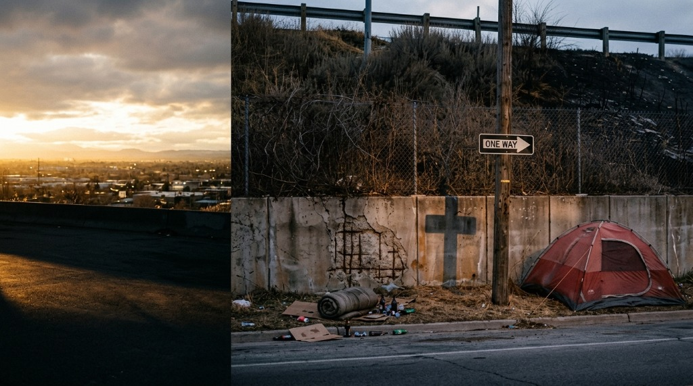
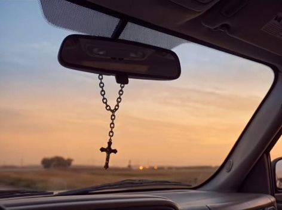

Somos una comunidad familiar de Asambleas de Dios en Costa Rica. Un hogar abierto para ti y tu familia donde experimentar la gracia, la presencia viva y el propósito transformador de Cristo que alcanza a toda vida.
«Honren a todos, amen a la hermandad, teman a Dios, honren al rey.»
✝ #UnlugarllenodelamordeDios
Nuestra visión congregacional se edifica sobre la fidelidad apostólica, la gracia transformadora y un profundo sentido de pertenencia en Cristo.
Una fe viva, encendida y apasionada por la presencia manifiesta del Espíritu Santo en cada celebración congregacional y en el diario caminar.
Hermandad genuina, mesas compartidas y relaciones de pacto que trascienden el domingo para acompañarnos mutuamente en cada etapa de la vida.
Arraigados firmemente en las Sagradas Escrituras con solidez teológica, profundidad doctrinal y aplicación práctica para los desafíos contemporáneos.
Entrega sacrificial, generosidad alegre y consagración activa al avance del Reino de Dios y al bienestar integral de nuestro prójimo.
Consagramos con alegría lo mejor de nuestros dones, talentos y recursos para la gloria de Cristo. Servimos a nuestra comunidad y familias con amor sincero, diligencia, calidez y el corazón pastoral de Jesús en cada aspecto ministerial.
Cada semana, personas y familias enteras encienden su vehículo para congregarse, adorar y renovar sus fuerzas. La cruz guía tu camino, te acompaña en el trayecto de la vida diaria y te espera con un hogar espiritual donde perteneces.

«Yo me alegré con los que me decían: A la casa de Jehová iremos.»
Salmo 122:1Nuestra celebración principal como congregación. Tiempo de alabanza contemporánea, comunión fraternal, predicación expositiva de la Palabra y un programa especialmente preparado para niños en Vida Plena Kids.
Una tarde diferente entre amigos. Buena música, café, conversaciones sinceras y mensajes que conectan la fe viva con la realidad cotidiana de la juventud colegial y universitaria.
Un espacio de quietud y clamor por familias, salud, necesidad laboral y un mover fresco de Dios.
Tu fidelidad y generosidad voluntaria permiten sostener el ministerio, bendecir a familias de nuestra comunidad y seguir extendiendo el mensaje transformador de Cristo en Costa Rica.
Transparencia y bendición tangible en cada área de la congregación.
Apoyo solidario y canastas de víveres a hogares en condición de vulnerabilidad de nuestra comunidad.
Recursos pedagógicos para Vida Plena Kids, encuentros juveniles de La Reu y formación ministerial.
Mantenimiento, equipamiento técnico de sonido, transmisión y mejoras de las instalaciones congregacionales.
Escuela de Discipulado, Liderazgo y Ministerio de las Asambleas de Dios. Diseñada para capacitar a todo creyente con solidez bíblica y excelencia en el llamado.
Doctrinas bíblicas esenciales, salvación por gracia, cristología y autoridad de las Escrituras.
Disciplinas de intimidad con Dios, oración, fruto del Espíritu y formación del carácter cristiano.
Principios de gestión de equipos, mentoreo, pastoreo bíblico y multiplicación discipular.
Evangelismo relacional, acompañamiento familiar y compromiso con el envío misionero.
Un lugar lleno de la presencia y el amor de Dios esperando por ti y tu familia cada semana. Te compartimos los accesos, rutas vehiculares y amenidades para que tu visita sea cómoda, fluida y llena de paz.
Ubicación física clara y referenciada | COSTA RICA
Tres Ríos, Cartago, Costa Rica — Del Parque Central de Tres Ríos, 150 metros al Este sobre la Ruta 251, contiguo a Café Malé (frente a las inmediaciones de La Antigua).
Inmueble acondicionado para reuniones y congregación familiar, ubicado sobre vía principal con acceso directo a nivel de calle.
Alabanza congregacional, predicación expositiva y Vida Plena Kids
Comunidad juvenil, dinámicas, discipulado y banda en vivo
Clamor por las familias, sanidad y peticiones de la comunidad
Coordinar tu llegada por WhatsApp
+506 7095-1665 · Equipo en Tres Ríos
Hemos acondicionado cada detalle para que disfrutes de un tiempo de edificación y paz absoluta.
Estacionamiento seguro en las inmediaciones con apoyo y guía de nuestros servidores.
Acceso frontal directo y cómodo sin desniveles para adultos mayores y familias.
Aulas didácticas acondicionadas para la enseñanza de los más pequeños.
Café de cortesía y espacio de comunión fraterna al finalizar la reunión.
Acceso directo a nivel de calle sobre vía principal
Rutas San José - Tres Ríos / Cartago por Calle Vieja (Ruta 251). Paradas a escasos pasos de la entrada.
Acceso directo sobre la Ruta 251 desde Curridabat/Pinares o desde el centro de Tres Ríos y Cartago.
A 150 metros al Este del Parque Central de Tres Ríos sobre la vía principal, contiguo a Café Malé y frente a C.C. La Antigua.
«Yo me alegré con los que me decían: A la casa de Jehová iremos.»
Salmo 122:1 · Nuestra mayor alegría es recibirteMonitoreo constante, perímetro cerrado y servidores de apoyo vehicular para que vivas la reunión con serenidad y tranquilidad absoluta.
Nuestro ministerio de hospitalidad te dará la bienvenida en el vestíbulo, te orientará con los asientos y resolverá cualquier duda con calidez.
Auditorio principal con aislamiento acústico profesional, climatización balanceada y acústica limpia enfocada en la adoración a Dios.
Nuestro equipo pastoral y de intercesión ora de manera confidencial por cada motivo. Permítenos acompañarte y creer juntos en Dios.